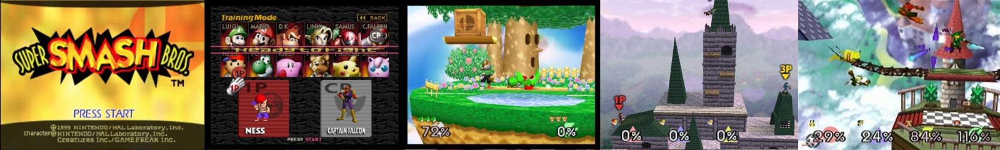

Video & Violin
Fu-Chen as an amateur composer and violinist.
My friends and I made up a band called "Cho-Boys" with violin, guitar, bass, drum and keyboard. Most of the songs we played are derivative from classical music, video game and movie, and we revised the music score to fit our play style.
( Unfortunately I lost some videos and scores we have played, so the following content may be incomplete. If you are interested in any score of songs, please contact me. )
EE The Wall
Nation Taiwan University, 2007
This song is the cover of back ground music of video game "Super Smash Bros." in Nintendo 64. It contents:
-
1. Saffron City
2. Yoshi's Island
3. Dreamland
[ MIDI in MP3 ]
This is the creation of our band leader "Aweather".
[ MIDI in MP3 ]
The song comes from Bach: Invention No. 13 in A minor, BWV 784
[ MIDI in MP3 ]
This song is the jazz version of a famous Disney song "When you wish upon a star" in Pinocchio and covered by Japanese singer "Ken Hirai".
[ MIDI in MP3 ]
EE Concert
National Taiwan University, 2007
(I totally lost the scores and the MIDIs of this play)
A very cute song which has been performed by Richard Clayderman.
Youtube ReferenceThis is the main piano theme of a film : "Secret" which is a directorial debut by musician Jay Chou.
Youtube ReferenceThe opening song of movie "Howl's Moving Castle" directed by "Hayao Miyazaki", which is made by musician " Joe Hisaishi".
Youtube ReferenceEE Veteran Night
National Taiwan University, 2008
(The acoustic equipment during this play had some problems, so the sound of live videos is not very good)
It is a galop by the German composer Hermann Necke (1850–1912) which means "mail coach".
[ MIDI in MP3 ]
The second song in album " Dancing The Dream Awake "by violin player " Conni Ellisor"
[ MIDI in MP3 ] (violin)
A famous violin song which has been played by Diana Boncheva(1981)
[ MIDI in MP3 ] (prelude)
[ MIDI in MP3 ] (violin)
We present a series of songs that are themes of those epic games in our generation. All of the scores are edited from original game sound track.